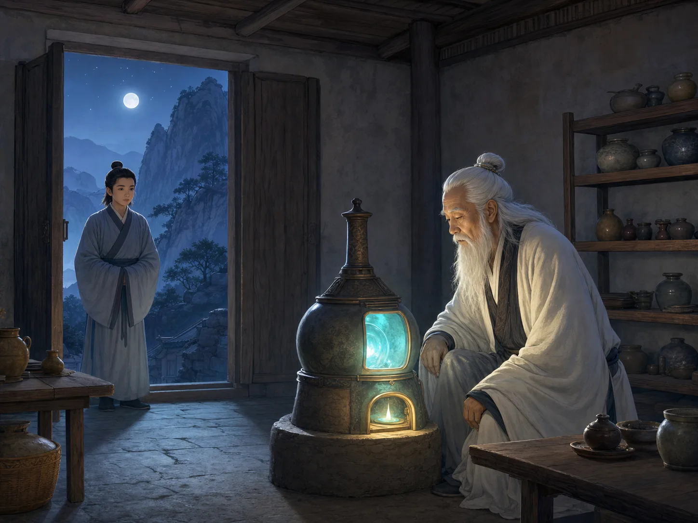
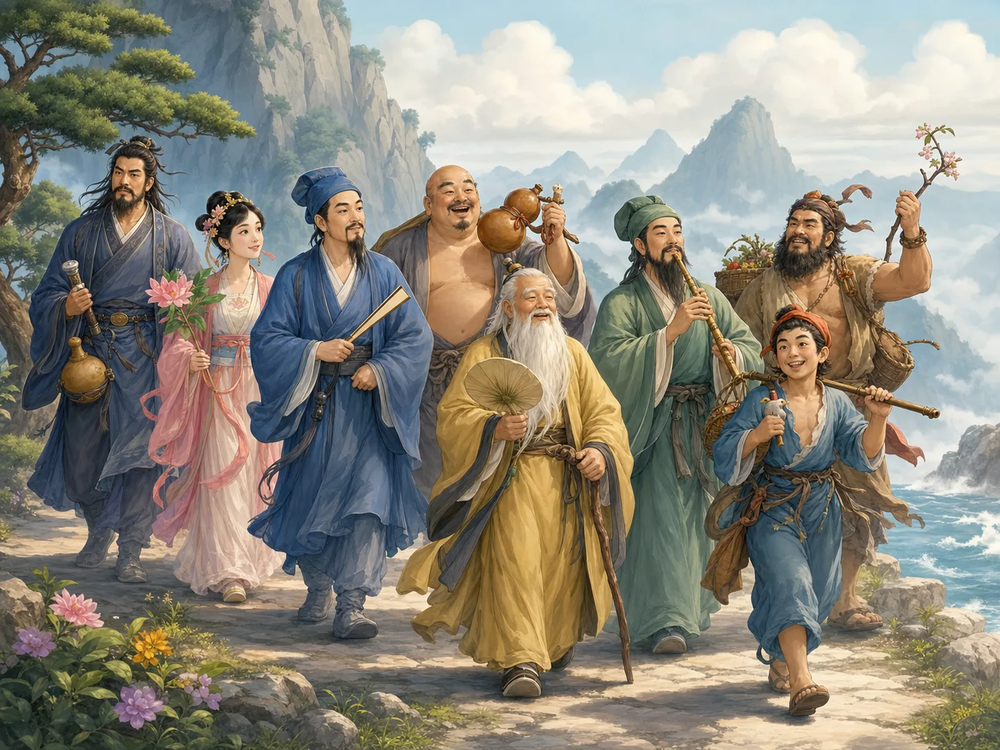
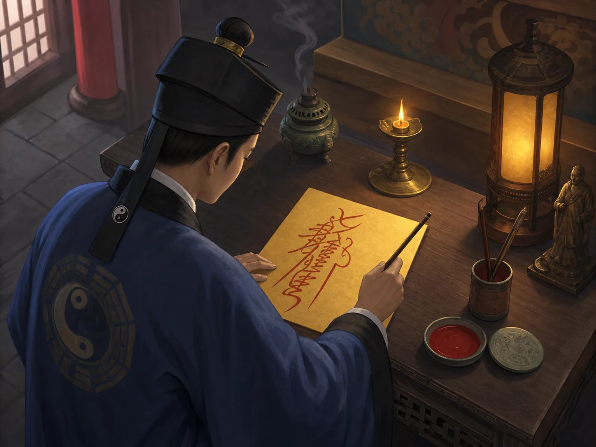

道教：不只神仙和仙丹
Daoism: More Than Immortals and Elixirs
阅读难度 · 困难Reading level · Hard
Page 1
炉火是一扇门，却不是整座房子
The Furnace Is a Doorway, Not the Whole House

This is a modern imagined scene. Daoist alchemy was real, but this person and this particular night are not a recorded historical event.
画里，一位白发道士坐在炉边。窗外是山和月亮，炉膛里闪着青绿色的光。他是不是在炼一种吃下去就能长生不老的仙丹？
古代确实有人这样做。大约从公元三世纪起，一些道教炼丹传统把矿物和金属放进密封的容器中加热，希望炼出能帮助人成仙的丹药。这叫“外丹”。炼丹还可能包括选择时间、洁净身体、保护炼丹的地方和举行仪式。
可是，只看这一只炉子，我们会把道教看得太窄。道教还有经典、神明、道士、道观和共同举行的仪式；有的人追求长寿，也有人关心怎样守住善念，帮助家人和社区平安。
道教不是一个晚上从炉火里突然冒出来的。它更像许多河流慢慢汇在一起。
In the picture, a white-haired Daoist sits beside a furnace. Mountains and moonlight fill the window. A blue-green glow shines inside the fire. Is he making an elixir that will let someone live forever?
Some people in ancient China really tried. Starting around the third century CE, certain Daoist alchemists heated minerals and metals in sealed containers. They hoped to make an elixir that could help a person become immortal. This was called external alchemy. It could also involve choosing the right time, purifying oneself, protecting the workroom, and performing rituals.
But one furnace gives us only a narrow view. Daoism also has sacred books, gods, priests, nuns, temples, and rituals for whole communities. Some Daoists searched for long life. Others focused on good conduct and the well-being of families and neighborhoods.
Daoism did not suddenly rise out of a furnace one night. It formed as many streams slowly flowed together.
Page 2
道教没有一个简单的“生日”
Daoism Does Not Have One Simple Birthday
两千多年前，《道德经》和《庄子》等书已经在讨论“道”：万物从哪里来、怎样变化，人又怎样少一点强求，活得更自然。今天，人们常把这些内容叫作“道家思想”。
可是，后来的道教并不是给《道德经》加上神仙和法术，就完成了。古代的养生方法、祭祀传统、神仙传说、治病与护身仪式，以及不同地方的信仰，也都参与了它的形成。
到东汉末年，出现了有组织的道教团体。天师道的传统说，公元142年，神化的老子“太上老君”向张道陵传授教法。历史研究无法带我们回到那个神圣会面，但一块公元173年的石碑说明：当时中国西南部的四川一带已经有一个传授经典、举行仪式的天师道组织。
老子和《道德经》是道教非常重要的一根梁柱，却不是整座房子的每一块砖。
More than two thousand years ago, books now called the Dao De Jing and the Zhuangzi were already exploring the Dao. They asked where things come from, how they change, and how people might live with less forcing and more natural ease. Today, these ideas are often called Daoist thought.
Yet the organized religion did not appear simply because someone added gods and magic to the Dao De Jing. Health practices, offering rituals, tales of immortals, rituals for healing and protection, and local beliefs all helped shape it.
Organized Daoist communities appeared near the end of the Eastern Han dynasty. According to the Celestial Masters tradition, the deified Laozi, known as Lord Lao, revealed teachings to Zhang Daoling in 142 CE. Historical research cannot take us inside that sacred meeting. However, a stone inscription from 173 CE shows that a Celestial Masters organization was already passing down texts and rituals around present-day Sichuan in southwestern China.
Laozi and the Dao De Jing are one of Daoism's most important supporting beams, but they are not every brick in the house.
Page 3
老子在这里有两个身份
Laozi Has Two Roles in This Story
在讲古代思想时，老子常被看作与《道德经》联系在一起的老师。不过，老子是否是一位能够确定身份的历史人物，以及这本书是否由一个人一次写成，学者仍在研究。
在道教信仰中，老子又不只是古代作者。他被尊为“老君”或“太上老君”，是神圣的老师。天师道关于公元142年的故事，说的正是这位神化的老子向人间传授新教法。
同一个名字因此出现在两个相连、却不完全相同的故事里：一个是古代思想和经典怎样形成，另一个是道教怎样讲述自己的神圣来历。只要分清历史材料和信仰传统，我们就不必把它们混成一个简单答案。
When people discuss early thought, Laozi is the ancient teacher linked to the Dao De Jing. Scholars still debate whether Laozi was one clearly identifiable historical person and whether one author wrote the whole book at one time.
Within the Daoist religion, Laozi is more than an ancient writer. He is honored as Lord Lao, a divine teacher. The Celestial Masters story about the year 142 describes this sacred Laozi revealing teachings to the human world.
The same name therefore belongs to two connected but different stories. One asks how an ancient book and its ideas developed. The other tells how a religion understands its sacred beginning. If we separate historical evidence from religious tradition, we do not have to squeeze both into one simple answer.
Page 4
八仙，是后来走到一起的传奇人物
The Eight Immortals Joined One Another Later

The Eight Immortals are legendary figures. The familiar group took shape around the thirteenth century.
八仙的画很热闹：有人拿葫芦，有人带剑，有人拿花篮，有人吹笛子。他们是不是从一开始就是一支一起旅行的“神仙小队”？
其实不是。八仙的故事来自不同年代。我们今天熟悉的八人组合，大约到十三世纪前后才逐渐固定，后来又被戏曲和故事讲得越来越生动。
在许多传说里，仙人原本也可能生活在人间，经过修炼或奇遇，才超越普通人的生命限制。这些故事表达了一个重要愿望：人的生命能不能被改变？
不过，八仙的故事是传奇，不是八份可以逐项核对的历史传记。它们让我们看见人们怎样想象“成仙”，不能证明八仙真的一起走过某一条山路。
Pictures of the Eight Immortals are full of motion. One figure holds a gourd, another carries a sword, another has flowers, and another plays a flute. Were they always a team of traveling immortals?
They were not. Their stories come from different periods. The familiar group of eight took shape around the thirteenth century. Plays and later tales helped turn them into the lively group people recognize today.
In many legends, immortals once lived as humans. Through training or a marvelous adventure, they passed beyond the usual limits of human life. The stories express an important hope: Can a human life be transformed?
But these are legends, not eight biographies that historians can check line by line. They show how people imagined immortality. They do not prove that all eight once walked down the same mountain road.
Page 5
两种“炼丹”，并不是简单的前后替换
Two Kinds of Alchemy, Not One Simple Switch
外丹师会用炉、火和矿物。有些配方包含朱砂 - 一种含汞的红色矿物 - 也可能使用汞或铅。这些物质可能有毒，制作和服用都可能伤害身体。中国历史上确实有人因为追求丹药而中毒。
后来成熟起来的“内丹”，也借用了炉火、丹药和炼制的语言。不过，它不是真的在肚子里点火。修炼者把身体看成一个小小的宇宙，用呼吸、静坐和专注来谈“炼”自己。
但历史并不是“外丹有毒，所以大家立刻改练内丹”。学者认为，内丹从公元八世纪以后逐渐发展，它既借用了外丹的词语，也吸收了更早的冥想方法和关于身体、宇宙的思想。两种传统还曾经并存。
同一个“炉”字，在外丹里可能是真正的器具，在内丹里却可能是一幅帮助修炼者理解身体与心的图画。
External alchemists used furnaces, fire, and minerals. Some recipes included cinnabar - a red mineral containing mercury - and could also use mercury or lead. These materials can be poisonous, and both making and swallowing them can harm the body. People in Chinese history did become sick while searching for immortality.
Internal alchemy, which developed later, also used the language of furnaces, elixirs, and refining. But no one was lighting a fire inside the belly. Practitioners pictured the body as a small universe. Breath, meditation, and focused attention became ways to “refine” the self.
History is not as simple as “External elixirs were poisonous, so everyone immediately switched to internal alchemy.” Scholars trace internal alchemy's development from about the eighth century onward. It borrowed language from external alchemy, but it also drew on older meditation practices and ideas about the body and cosmos. For a time, both traditions existed side by side.
The word furnace could name a real tool in external alchemy. In internal alchemy, it could be an image that helped a practitioner think about body and mind.
Page 6
黄纸上的符，不是随手画的“魔法字”
A Talisman Is Not a Random “Magic Scribble”

This modern image shows a Daoist writing a talisman. Real talismans belong to traditions with training and ritual rules.
道士提起毛笔，在黄纸上写下红色的符。符里可能有能认出的汉字，也可能有像图案一样的线条。
在道教仪式里，符不是谁都能随便画、画完就自动产生力量的秘密涂鸦。不同传统有不同的传授方法和使用规则。符可以用于护身、治病或驱除危险；有时它像一份写给神明世界的文书。重要的不只是纸上的形状，还包括谁有资格写、在什么仪式里使用。
道教仪式也常让人想到古代官府：有名册、印记、文书、职位和上奏。人间用文书传递命令与请求，道教则用相似的想象来描绘人与神明世界的沟通。
如果只说“符是给鬼神看的命令”，会漏掉更丰富的一面。它可能保护一个人，也可能是一场复杂仪式中的一小部分。
A Daoist raises a brush and writes a red talisman on yellow paper. The design may include recognizable Chinese characters and lines that look more like pictures.
In Daoist ritual, a talisman is not a secret doodle that anyone can copy to make magic happen. Different traditions have rules for learning, preparing, and using talismans. They may appear in rituals for protection, healing, or driving away danger. Sometimes a talisman works like a document addressed to the world of the gods. The shape matters, but so do the trained person who writes it and the ritual in which it is used.
Daoist ritual can resemble the government of ancient China. It may include registers, seals, documents, ranks, and written requests. People used paperwork to send commands and requests on earth. Daoist traditions used a similar picture for communication between humans and the sacred world.
Calling a talisman “a command for spirits” tells only part of the story. It might protect one person, or it might be one small piece of a large ceremony.
再看一次整座房子
Step Back and See the Whole House
道教是中国形成的一组宗教与思想传统。它重视“道”，尊奉自己的经典和神明，也发展出道士、道观、仪式、戒律和修炼方法。它有个人独处时的静修，也有整个社区一起举行的活动。
炉火是真的历史线索，八仙是后来形成的传奇群像，符是宗教仪式的一部分。它们都属于道教，却没有哪一个能代表全部道教。
道教不是只有一张神秘的图片。它更像一座有许多房间、经过两千多年不断修建的房子。
Daoism is a group of religious and intellectual traditions that formed in China. It centers on the Dao, honors its own texts and gods, and has developed priests, nuns, temples, rituals, rules for conduct, and methods of self-cultivation. It includes solitary practice and events shared by a whole community.
The furnace points to real history. The Eight Immortals are a legendary group that took shape later. Talismans belong to systems of religious ritual. All three are parts of Daoism, but none can stand for the whole tradition.
Daoism is not one mysterious picture. It is more like a house with many rooms, built and rebuilt for more than two thousand years.